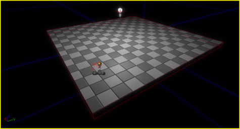
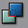
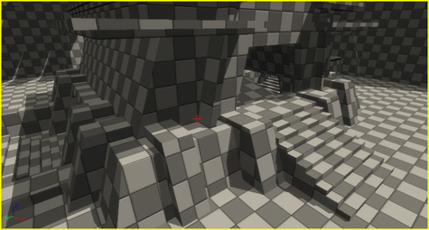
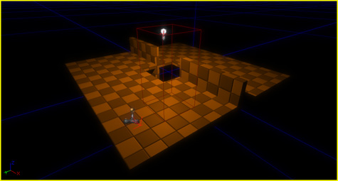
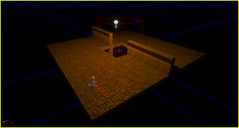
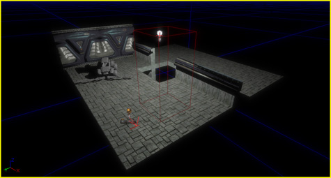

UDN
Search public documentation:
CreatingLevelsJP
English Translation
中国翻译
한국어
Interested in the Unreal Engine?
Visit the Unreal Technology site.
Looking for jobs and company info?
Check out the Epic games site.
Questions about support via UDN?
Contact the UDN Staff
中国翻译
한국어
Interested in the Unreal Engine?
Visit the Unreal Technology site.
Looking for jobs and company info?
Check out the Epic games site.
Questions about support via UDN?
Contact the UDN Staff
レベルの作成
ドキュメントの概要: 簡単なレベルを作成するための、Unreal Engine レベルエディタの使い方の説明。 ドキュメントの概要変更ログ: Warren Marshall により作成。時間をかけて管理。概要
本書では、Unreal EngineのUE3 バージョンを使用して、ご自身で最初のレベルを作成するための基本事項を説明します。UnrealEngine2 と UnrealEngine3 とでは多くの変更がありますが、次のステップに従えば、テレイン、BSPエリア、静的メッシュ、および様々なライトを使用してレベルを作成する方法が分かるようになっています。 本書では、レベルを構成する主要な要素の作成と配置の方法に関する概略を説明します。読み終えれば、実際のレベルに入れられる基礎単位の作成方法を理解できるでしょう。はじめに
UnrealEd が最初に起動すると、ワールドを描くための空白のキャンバスが用意されているのを見ることができます。描くための手段は、ライトでアクセントをつけられパスで結合された、静的メッシュとブラシです。説明が芸術的すぎますか？少しはそうかも知れません。しかし、創造力に溢れたレベル設計者にはちょうど良いでしょう。 レベルのデザインは好きでなければできない仕事であることは、レベルの薄暗い隅のライティングに苦労したことがある方なら、お分かりになるでしょう。レベルの基本
デフォルト設定で Additive スタイルにてレベル編集が行われます。しかしながら、 File メニューの New Level メニュー項目から新規のレベルを作成時、Additive (加算)またはSubtractive (減算)スタイルで作業することができます。BSP
BSP によってワールドの外殻(ハル)が形成されます。BSP は、ビジビリティ/ネットワーキング エンジン用の主要オクルダーで、レベルにおける大きなジオメトリ ピースの大部分を形成します。ワールドにブラシを追加するには、ビルダ ブラシ（ 赤 ）を使用する必要があります。ワールドに基本キューブを追加するには、次を試してみてください。:- Cube ビルダ ボタン
 を右クリックします。
を右クリックします。
- 次の Properties 値を入力します: X=1024,Y=1024,Z=32.
- Properties ビルドボタンを押して変更を更新します。
- Add Brush (ブラシ追加ボタン)
 をクリックします。
をクリックします。
 さらに詳しいBSPブラシプロパティおよび演算については BSP ブラシ チュートリアル ページをご覧ください。BSPジオメトリ上での更なるコントロールについては メトリ モード入門 ページをご覧ください。
さらに詳しいBSPブラシプロパティおよび演算については BSP ブラシ チュートリアル ページをご覧ください。BSPジオメトリ上での更なるコントロールについては メトリ モード入門 ページをご覧ください。
ライト
この時点でレベルの再生しても、まったく何も表示されないのであまり意味がありません。そういうことで、ライトを追加します。 BSP サーフェスの中央辺りを右クリックし、 Add Actor サブメニューから Add Light を選択します。ウィジェットを使用して、ライトを少し上にドラッグすると、ライトの範囲を広げることができます。ライティングをサポートするビューモードにビューポートを切り替えます。そうすると以下のようになります。:
この方法ではポイント ライトが追加されます。他の種類のライトを追加するためには、 汎用ブラウザ を開き、様々なアクタ クラスを表示するアクタ タブに切り替えます。次にライト カテゴリーを開き、希望のクラスを選択します。次に、レベルで右クリックします。そうすると、選択されたライト クラスをその位置に追加するオプションが表示されます。 ライティングについての更なる情報は ライティング参照 および Unreal Lightmass ページをご覧ください。Player Starts(プレイヤー開始点)
このレベルをロード時、プレイヤーの開始点をゲームに指示する必要があります。そのため、 どこでもいいのでbspサーフェス上をクリックし、 Add Actor サブメニューから PlayerStart メニュー項目を選択します。これより次のような感じになります。：
Playing The Level
作成した物を見るためレベルを実行する前に、ツールバーの Build Geometry ( ) ボタンをクリックしてレベルをビルドします。
ジオメトリがビルドされると、 Play In Editor (PIE) 機能または Play From Here 機能のいずれかから選択することができます。
[ESCAPE] キーを押してゲームウィンドウを閉じ、エディタに戻ります。
) ボタンをクリックしてレベルをビルドします。
ジオメトリがビルドされると、 Play In Editor (PIE) 機能または Play From Here 機能のいずれかから選択することができます。
[ESCAPE] キーを押してゲームウィンドウを閉じ、エディタに戻ります。
Play In Editor
Play This Level ボタン をクリックします。
これによりレベルがロードされPlayer Startの位置で開始します。
をクリックします。
これによりレベルがロードされPlayer Startの位置で開始します。
Play From Here
レベルで作業していると、レベルのサイズが大きくなることは避けられません。そのため、開始位置からテストしたいエリアまで移動するのが困難になります。レベル内の特定の位置から再生したい場合、レベルのフロアを右クリックし、メニュー アイテム Play From Here を選択します。これによって、通常通りゲームにレベルがロードされても、クリックした位置が開始位置となります。付加的なジオメトリ
Player Containment
レベルを再生している間、BSP の端を踏み越えて、すき間に落ちたり、入り込んでしまうことがあることに気づかれたことでしょう。エンジンは、レベル内でプレーヤの動きを制限しようとせず、ユーザーに任せています。別のBSPを使用してプレーヤがすき間に落ちるのを防ぐ必要があります。たとえば、簡単なウォールを作って、それがどのように機能するかみてみましょう。:- Cube ブラシビルダボタン を右クリックします。
- 次の Properties 値を入力します: X=1024,Y=32,Z=256
- Properties ビルドボタンを押して変更を更新します。
- Subtract Brush(減算ブラシ) ボタン

をクリックします。
 レベルで再生する場合は、この新しい壁が追跡を中止します。部屋やエリアを正しく囲んだ場合は、プレイヤーは決して迷うことはありません。
レベルで再生する場合は、この新しい壁が追跡を中止します。部屋やエリアを正しく囲んだ場合は、プレイヤーは決して迷うことはありません。
窓、ドアおよび落とし穴
Unreal Engine は、addition (加算)以外にも、subtraction(減算) などのBSPの操作をサポートします。フロアに穴を作ってみましょう。- Cube ブラシビルダボタン を右クリックします。
- 次の Properties 値を入力します: X=256,Y=256,Z=512.
- Properties ビルドボタンを押して変更を更新します。
- Subtract Brush(減算ブラシ) ボタン をクリックします。
 レベルを再生すると、壁によって通過するのを遮られているのに、フロアの穴には落ちてしまうことがお分かりになるでしょう。この同じ原理は、窓、ドアなど、作成したいものすべてに適用できます。
レベルを再生すると、壁によって通過するのを遮られているのに、フロアの穴には落ちてしまうことがお分かりになるでしょう。この同じ原理は、窓、ドアなど、作成したいものすべてに適用できます。
スカイドーム
Unreal Engine 3のレベルにある空は、ワールド上に配置されるスカイマテリアルを、非常に大きなドームのインテリアに適応して作成されます。マテリアルは、ワールドフォグでブレンドするエッジにて、フォグカラーとブレンドされた雲のテキスチャのパンセットを持ちます。複数でマテリアルおいて、エミッシブマスクが太陽に使われます。マテリアルのテクスチャのレイアウトはドームメッシュの UV マッピングにより、平面マップ化されたり、球状にマップされたりとあります。これらのマテリアルはドームに適用され、このドームはワールドに配置され、これは非常に大きなサイズにまで至ります。これにより視差が減少されます。原点から作業する
説明を簡単にするために、いままでビルダ ブラシはまったく動かしませんでした。もちろんビルダブラシを自由に動かしていただいて結構です。同じビルダ ブラシを使用して、好きな数だけブラシを加算したり減算できます。ビルダ ブラシを選択し、ウェジェットを使用してブラシをあちこちにドラッグし、回転させます。また、新しいブラシを加算したり減算したりしてください。エディタの使用に慣れたら、最小限の作業で洗練された形状を創り出すことができます。例えば、このシーンは、すべてBSPで作成されたものです。:
もちろん、ライトの色、マテリアル、静的メッシュなどの装飾的タッチを適用し始めたら、さらに美しい外観ができるでしょう。ライトカラー
では、元のレベルに戻ります。ライトの色を素敵なオレンジの色調に変えましょう ビューポートにあるライトをダブルクリックすると、アクタプロパティウィンドウがポップアップ(または F4 を押す)します。 Oでは、元のレベルに戻ります。ライトの色を素敵なオレンジの色調に変えましょう。ビューポートのライトをダブルクリックすると、アクタ プロパティ ウィンドウがポップアップ表示されます。 Light カテゴリーを開き、次に LightComponent を開き、 Color をクリックします。 ここで拡大ボタンをクリックすると、標準Windows色選択ダイアログが表示されます。素敵なオレンジの色調を選択し、 OK をクリックします。シーンは、次のように表示されます。
ここで拡大ボタンをクリックすると、標準Windows色選択ダイアログが表示されます。素敵なオレンジの色調を選択し、 OK をクリックします。シーンは、次のように表示されます。

マテリアル
マテリアルをBSPサーフェスに適用するのは簡単です。マテリアルを適用したいサーフェスを選択し、Generic ブラウザのマテリアルをクリックするだけです。マテリアルは、選択されたサーフェスすべてに自動的に適用されます。テクスチャ パッケージの一つを開き、BSPサーフェスにマテリアルを素早く適用しました。:
マテリアルの更なる情報については Materials Tutorial ページをご覧ください。Static Meshes
StaticMeshは、手動で作業することなく、レベルに素早くディテールを追加するのに適した方法です。StaticMeshは、ここですべてを説明するには余りにも大きなトピックですので、いくつかの基本を取り上げます。StaticMeshをレベルに追加するためには、まずGeneric ブラウザでStaticMeshを選択する必要があります。レベルのどこかを右クリックし Add Actor サブメニューからメニュー項目、 Add StaticMesh を選択します。 これによってレベルに静的メッシュが追加されます。静的メッシュは、ドラッグしたり、回転させたりでき、望みの位置に移動させることができます。数個のStaticMeshをレベルに追加しました（ そしてライトの色を白に戻し、見えやすくしました ）。:
ご覧のように、StaticMeshは、BSPとまったく同じように光っているため、StaticMeshとBSPの相違を見つけるのは困難です。静的メッシュは、最小限の努力でたくさんのディテールをレベルに追加するためには非常によい方法です。 静的メッシュの更なる情報については、 StaticMesh のインポートのチュートリアル をご覧ください。テレイン
まず最初のステップはテレインを作成することです。Generic ブラウザの Actor タブで、 Info 下にある、 Terrain アクタを選択します。ワールドを右クリックし、 Add Terrain Here を選択します。新しく配置された Terrain アクタを右クリックし、 Properties (または F4 を押す)を選択します。 Terrain セクション下にて、 NumPatchesX および NumPatchesY 値をそれぞれ 4 になるよう変更する。 3D ビューポートにて、テレインはライトが配置されるまで黒くなっている。Generic ブラウザの Actor タブで、 Light 下にある、 Directional Light アクタを選択します。ワールドを右クリックし、 Add Directional Light Here を選択します。ライトの配置や回転を必要に応じて行います。 テレインには、レイヤーが最低1つ必要です。新しく配置された Terrain アクタを右クリックし、 Properties (または F4 を押す)を選択します。 Terrain セクション、 Layers property の隣にある Add New Item をクリックします。新しいテレインレイヤーセットアップは新規作成されたレイヤーの Setup プロパティ内に入力されなければいけません。Generic ブラウザの Generic タブで、 Terrain Layer によりリソースタイプをフィルタします。希望の Terrain レイヤーを選択し、Terrain レイヤーの Setup プロパティで Use Current を選択します。 次に、 Terrain Editing モードに行き、高さの値を調節するため、テレインサーフェスにペイントすることにより Terrain を操作します。 テレイン関連の詳細については Unreal Engine での Terrain の設定 および Terrain の使用 ページをご覧ください。エミッタおよびパーティクルエフェクト
サウンド
レベルで使用できるアンビエントサウンドの異なるタイプの説明については、 サウンド アクタ ? ページをご覧ください。ナビゲーション AI
の設定や AI パスの使用についての更なる情報は、 レベルデザイナー向けナビゲーション AI ページをご覧ください。レベルストリーミング
Persistant レベルおよび複数のストリームされたレベルの設定についての更なる情報は レベルのストリーミングの手順 ガイドをご覧ください。レベル最適化
レベルのパフォーマンス向上については レベル最適化ガイド を、各警告については マップチェック エラー ページをご覧ください。エピック レベルデザイナーからのアドバイス
Josh Jay? のコメント。
あるヒントは経験のあるレベルデザイナーにはとてもあたりまえのことですが、初心者には役立つかもしれません。:
|
| 基本的なBSP構成やレベルベーシックが行える人材が整ったら、直ちにスクリプト側にまわるようお奨めします。プログラムやスクリプト経験のない人たちや、スクリーン上でどくじにデザインした物を見たい意欲的な人たちには非常にやり応えのあるものです。トリガや動的ライトのベーシックな空のシェルを入手して、スイッチやゲート、トグル、アクタ要因、オブジェクトの接続などさせてみましょう。独自のイニシアチブやデザインアイデアの実装などを話している暇はありません。 とは言いつつ、基本的なビジュアルなメッシシングを習得することは非常に重要です。スクリプト経験者より、実際にLD経験者のほうが10人中9人の割合で採用されているのが現状です。悲しいですが、これが事実です。 早い時期に、イベントごとにプレイヤーのフィードバックを与えることになれましょう。 あらゆる人が、基本的なスクリーンゆれ、パーティクルエフェクトのスポーンおよびプレイサウンドのトリガの仕方を知る必要があります。ビルの倒壊やフォームカバー、その他のものを作成するのに1時間かかったとして、それらを1つにするのにさらに5分がかかったとしても、オリジナル性に富んだすばらしい体験となるでしょう。 いく分か話がそれましたが、今まであったことのある大学生一人一人が、プレイヤーのフィードバックを任意の最終的な仕上げの項目として扱っていましたが、現実としてはこの核心の部分がプレイヤーが求めているものなのです。インストラクターが以前に彼らの頭に焼付けたフィードバックの重要性を得てくれたらと思います。しっかりとしていて楽しい、基本的なプレイヤーインタラクションを得るために従来の概念を学生に植え付けるというのならば、限界がなく自由に赴くままのデザインや、デザインに対する意欲的な意思をもっていろいろためせてあげるということとは反し、彼らにとって逆効果になるでしょう。 多くの人が学生は可能性を狭くする、責任が重くないものや製作などをするような考えを持つ傾向にあるようですが、良いフィードバックやしっかりとしたインタラクションをもつ簡素なデザインは、いつまでも見通しがなく学校にいき時間をむだにするより、よりはるかによいものなのです。 多分、我々にとってはインスタンスの一群で、各prefab は変更を追跡するので、prefabを更新時に個別のprefabで行った変更を抹消しないのです。動的レッドライトのかかったビルドでのprefab ドアを持つことができ、それを全体にわたって配置し、1つのprefab ライトをグリーンになるよう変更し、後にすべてのドアに使われたレッドの影を調整し、メインのprefabを更新します。すべてのレッドライトは新しい影に更新しますが、1つのprefabインスタンスをグリーンライトになるよう変更していることから、その他のものが更新されてもそれだけはグリーンになったままです。 基本的にそれらはインスタンスですが、あなたが変更した特定のインスタンスについてすべて覚えているので、新しい変更がプロパゲートされた時に、個別の変更が消失しないのです |
| テクスチャ地図のみがレベル中に散らばった小さなテクスチャでのメッシュに有効です。通常のメッシュはオブジェクトにつき、単独のテキスチャ(またはnormal, diffuseなどを見た場合、テキスチャの一連)を使用しています。地面にある瓦礫、標識やその他の小さいものは地図の最適な候補で、レベルでどう使われるかが常にストリームされる必要があります。 |
| まず、BSPにてマップを十分に削り落とします。メッシュを追加したり、ライティングをいじくらないでください。プロトタイプには、ただ大量のポイントライトを投射し、 BSPではシンプルにしておきます。明るい格子縞のBSPのように面白くなっているならば、よりよくしたときにさらに面白くなります。 これは非常に重要です。少しだけ拡張するには:gameplay/スクリプティングおよびビジュアルを個別のパスとして計画してください。これは当たり前のようなことですが、私が過去に携わったプロジェクトにはこれが行われていなかったことが多々あり、大変苦労しました。デザイナーがビジュアルおよびgameplay/スクリプティングを同時に行っている場合は、どれか1つに絞ってください。通常、それはgameplayになります。コードまたはアセットがオンラインになるよう待機していることをそれらのタスクが個別に予定されている場合で、同じ人が両方を行っていても、ビジュアル、gameplay/スクリプティングがそれぞれ十分に注意を注がれるようにしてください。 UE3 のKismetおよびMatinee はこれを簡単にします。理由としてはプロジェクトにて最終に近いスクリプトを非常に早い段階で予定できるため、デザイナーがプログラマーに迷惑をかけることがなく、最低でもプロトタイプ、または何でも作ることができるのです。 |